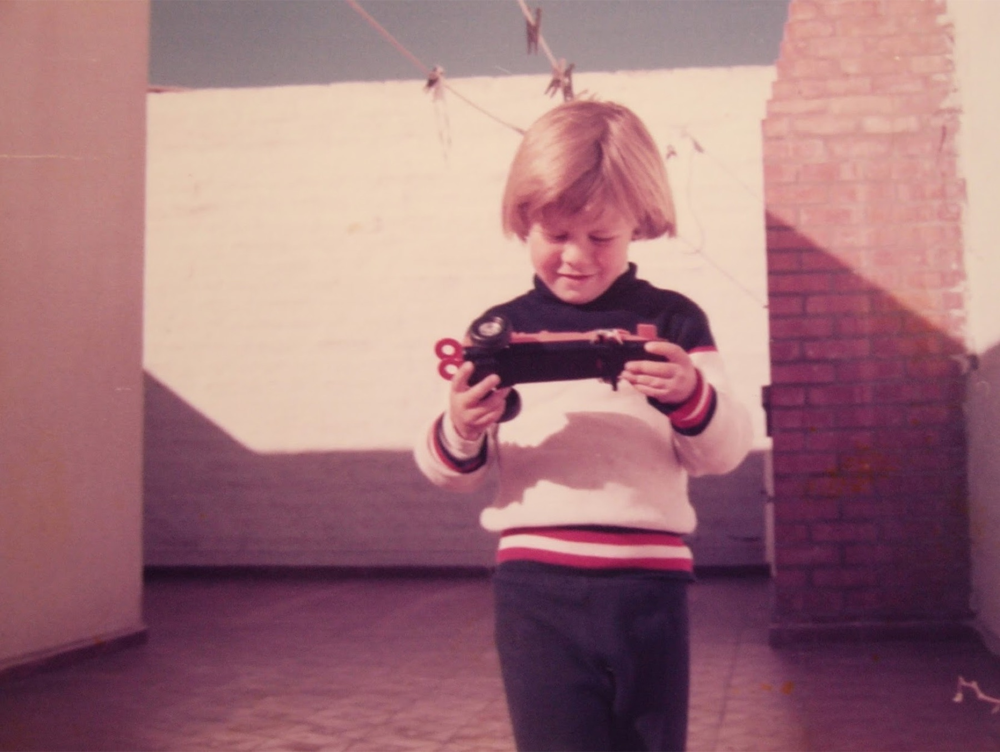
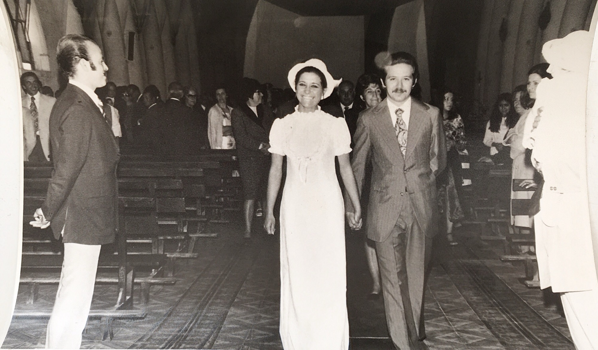
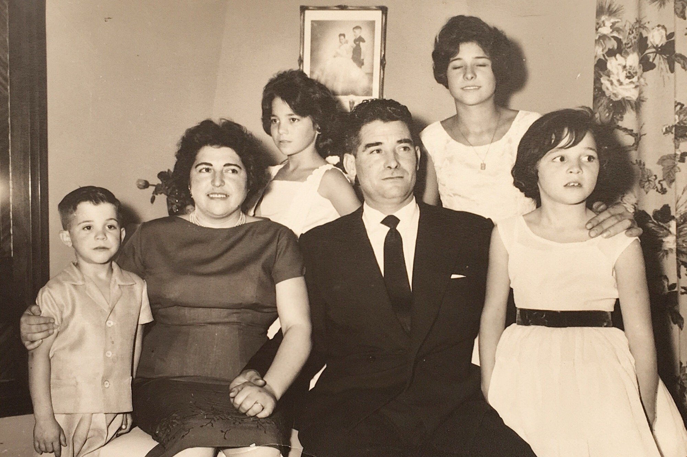
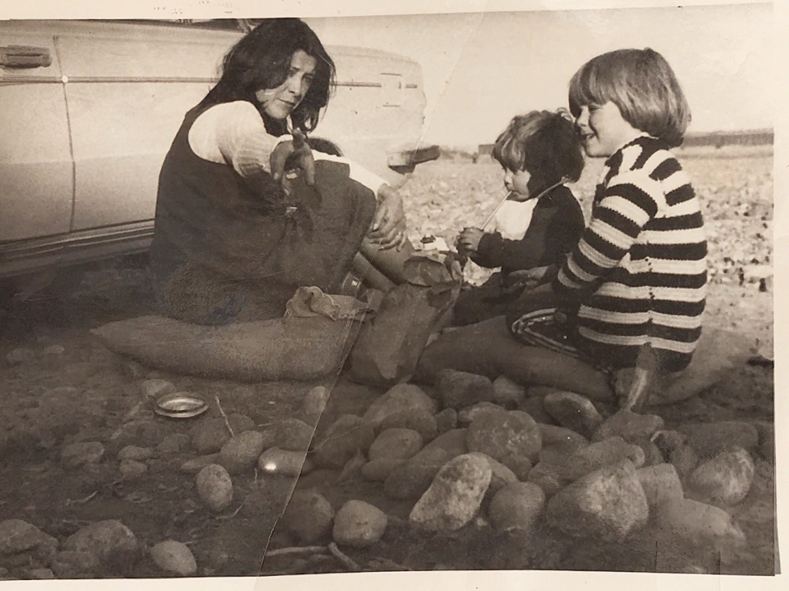
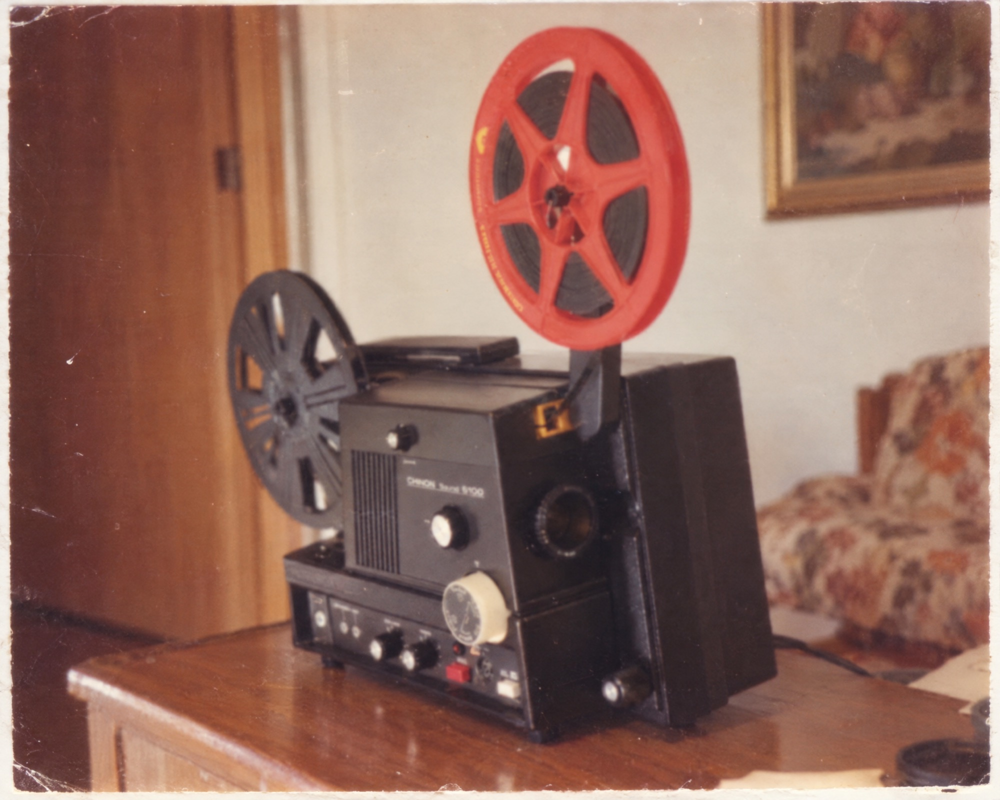
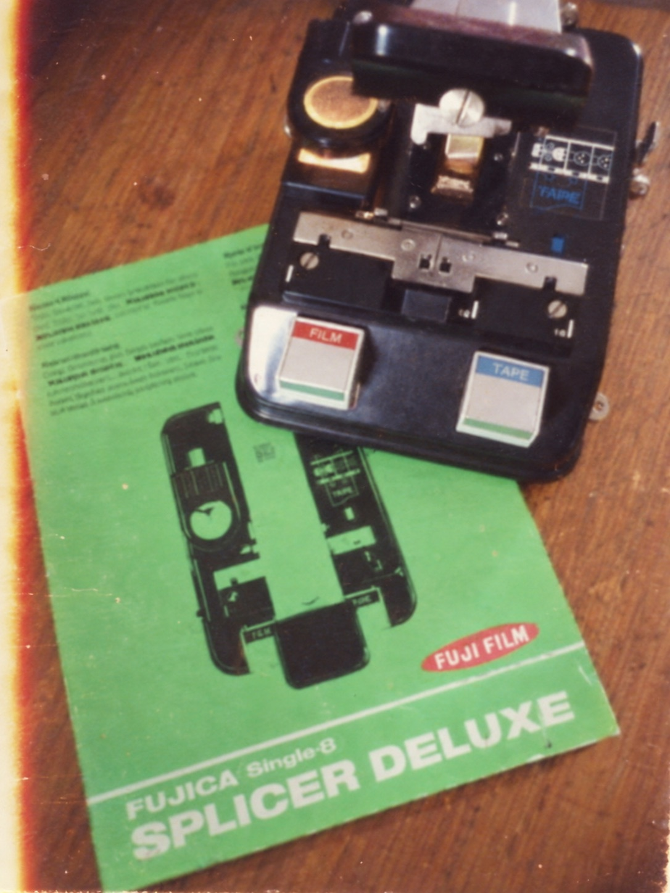

welcome to the
web-movie
a super interesting film that, luckily, doesn’t have an ending yet ;-)






at four he started studying music.
first a wooden box drum in a children’s orchestra. later, the recorder.
he never stopped playing.
Let's Talk
collaborations, commissions, talks, workshops, or building something new together.